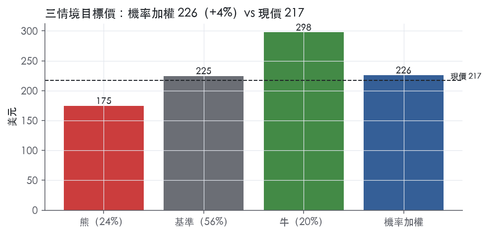
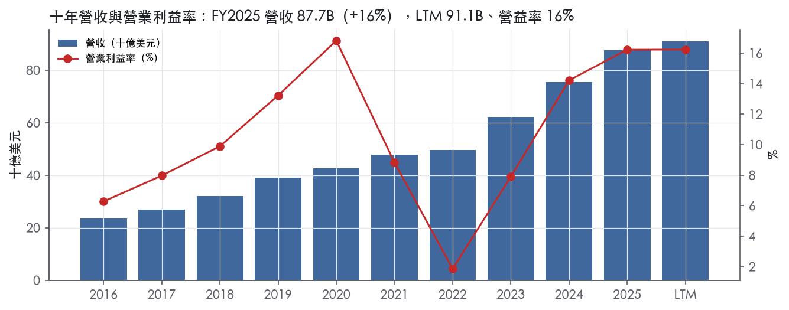
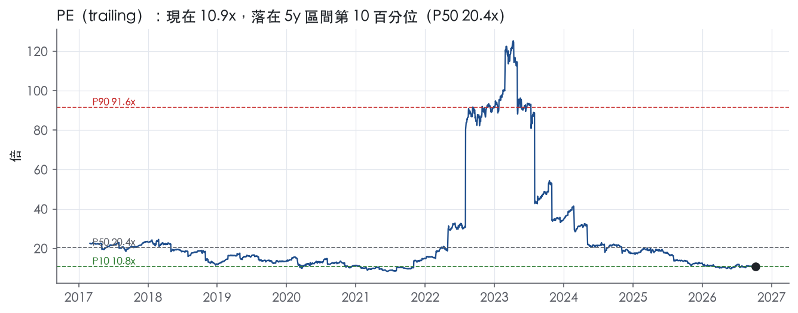
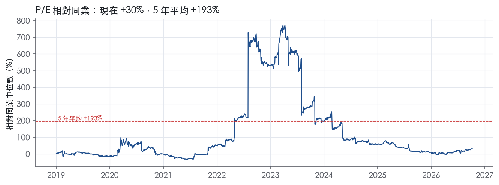
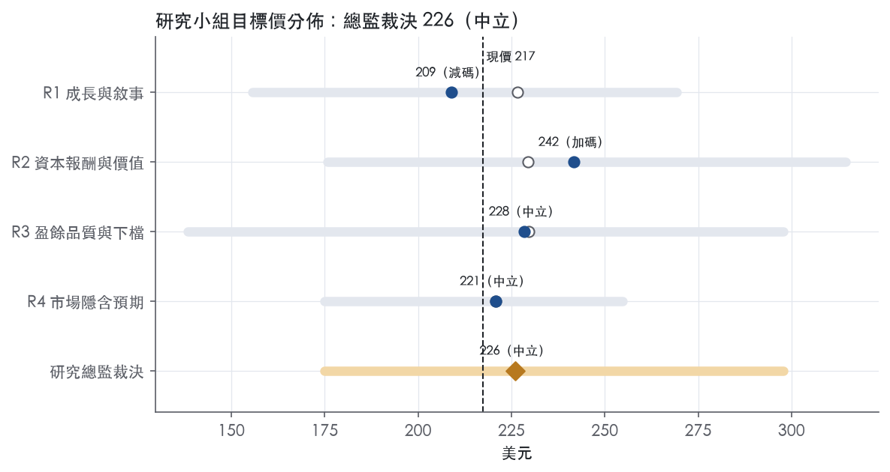
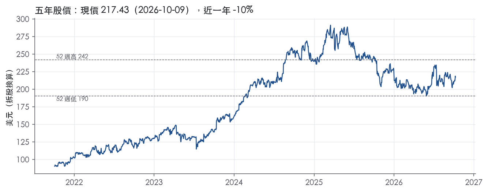

評等總表 › 金融 › PGR
盈餘降、倍數升，相抵後中性｜評等 中立｜目標價 226
| 評等 | 中立 |
| 12 個月目標價 | 226 美元 |
| 現價 | 217.43 美元（2026-10-09） |
| 預期報酬 | 股價 +3.9%＋股息 6.4%＝總報酬 +10.3%；同業籃門檻 10.2%，超額 +0.1% |
| 估值方法 | P/E 12.5x，套在第 5–8 季的EPS（也就是一年後的未來四季） |
| 三情境 | 熊 175／基準 225／牛 298 |
| 研究流程 | 四位研究員兩輪辯論＋研究總監裁決 |
| 資料來源 | SEC EDGAR XBRL、Tiingo、FRED（全免費） |
盈餘降、倍數升，相抵後中性（研究總監裁決，四位研究員兩輪辯論後）
評等 中立｜12 個月目標價 226 美元（總監三情境機率加權 227 與研究員中位數 225 各半）｜現價 217.43（2026-10-09）
預期報酬：股價 +3.9%＋股息 6.4%＝總報酬 +10.3%。同業籃門檻 10.2%，超額 +0.1%。
估值方法：P/E 12.5x，套在第 5–8 季的EPS（也就是一年後的未來四季）。三情境：熊 175（24%）／基準 225（56%）／牛 298（20%）。
什麼會讓研究總監改變看法：2026Q3–Q4 綜合比率守在 ≤87 且 NPW 年增回到 7% 以上，我會把 y2 營益率上調到 15%、倍數取 P50 13.3x 並轉多；12 月年度精算檢視出現前期不利發展且 trailing P/E 跌破 10x，我會上調熊機率並轉空。
| 過去四季（實際，FY2026Q2） | 未來四季 | 第 5–8 季 | 第 9–12 季 | |
|---|---|---|---|---|
| 營收（B） | 91.1B | 95.6B | 100.4B | 106.4B |
| 營收成長 | 10.5% | 5.0% | 5.0% | 6.0% |
| 營業利益率 | 16.2% | 14.5% | 13.0% | 13.0% |
| EPS（美元） | 19.94 | 18.98 | 17.98 | 19.18 |
| EPS 成長 | 12.3% | -4.8% | -5.3% | 6.7% |
| 每股股息（美元） | 13.90 | 13.90 | 13.90 | 13.90 |
| P/E（現價） | 10.9x | 11.5x | 12.1x | 11.3x |
| 股息殖利率（現價） | 6.4% | 6.4% | 6.4% | 6.4% |
過去四季為申報數字；預測為研究總監的假設、程式計算。倍數與殖利率都用現價計算，用來看現價對應各期獲利的高低。
| 情境 | 機率（歷史） | 故事 | 未來四季營收成長 | 第 5–8 季營益率 | 倍數 | 目標價 | 股價漲跌 |
|---|---|---|---|---|---|---|---|
| 熊 | 24%（25%） | 對應風險表第 1 條（綜合比率續升）與第 3 條（12 月年度精算檢視出現前期準備金不利發展），市場先降評 | 3.0% | 11.0% | 12.0x | 175 | -19.6% |
| 基準 | 56%（55%） | 綜合比率由 87 向 90.5 漂移，前期有利發展退場，EPS 自高點回落，倍數隨正常化入帳小幅回升 | 5.0% | 13.0% | 12.5x | 225 | 3.4% |
| 牛 | 20%（20%） | 同業維持紀律、事故年損失率回落，綜合比率守在 87 附近，保單成長不靠降價，倍數回到前瞻帶 P50 | 6.0% | 15.5% | 13.5x | 298 | 36.9% |
目標價由程式依研究總監的驅動與倍數計算；機率由研究總監給定。括號內是歷史頻率：把這檔股票過去十年 12 個月報酬的波動形狀，置中在基準情境，結果落在各情境附近的比例。

四位研究員用不同方法各自估值，回應研究總監的質疑後交出第二輪，最後由總監逐點裁決。各研究員的主張見第七章，裁決理由見第八章，完整論證見《研究底稿》。
| 立場（一輪→二輪） | 加權目標價（一輪→二輪） | 評等（一輪→二輪） | 第二輪倍數 | 熊～牛目標價 | |
|---|---|---|---|---|---|
| R1 成長與敘事 | 中性→看空 | 227→209 | 中立→減碼 | 11.0x | 156～269 |
| R2 資本報酬與價值 | 中性→中性 | 229→242 | 中立→加碼 | 12.5x | 176～315 |
| R3 盈餘品質與下檔 | 中性→中性 | 230→228 | 中立→中立 | 12.5x | 138～298 |
| R4 市場隱含預期 | 中性→中性 | 221→221 | 中立→中立 | 12.5x | 175～255 |
| 研究總監裁決 | 中性 | 226 | 中立 | 12.5x | 175～298 |
目標價由程式依各自的驅動與倍數計算；評等＝機率加權總報酬 − 同業籃門檻。
Progressive 是一家保險控股公司，透過保險與非保險子公司從事業務，主力是個人與商業車險，另外也賣個人住宅財產險、機車/休旅車/船等休閒載具保險¹。商業線產品包括車輛相關責任與實體損害險、主要針對小型企業的一般責任與商業財產險（BOP），以及主要賣給運輸業的工傷險¹。公司營運範圍覆蓋美國全境¹。Progressive 的願景是成為消費者、代理人與企業主在保險及其他金融需求上的首選目的地，四大戰略支柱是人才與文化、滿足客戶廣泛需求、領導品牌與具競爭力的價格¹。本質上這是一家靠精算定價＋數據分群＋直銷/代理雙通路規模優勢取勝的車險龍頭，財產險與商業線是第二曲線。
公司分兩個營運分部：個人線（Personal Lines）與商業線（Commercial Lines），2025年個人線占總承保保費（net premiums written）87%，2024年85%，2023年84%¹；商業線則為2025年13%、2024年15%、2023年16%，呈現逐年縮小的比重趨勢¹。
個人線內部，個人車輛業務（personal auto + special lines）占個人線保費2025年96%、2024年95%、2023年94%，其中個人車險又占個人車輛保費2025與2024年均為95%、2023年94%；公司在美國私用車險市場按2024年保費排名第二，市場約有230家競爭者，前16大險商（含Progressive）合計約占市場85%¹。特殊線產品（機車、RV、船艇）公司自認是機車與船艇市占龍頭、RV保險最大供應商之一¹。個人財產險（住宅、公寓、出租人保險等）占個人線保費2025年僅4%（2024年5%、2023年6%），公司是美國第12大住宅險商（按2024年保費），市場有約360家競爭者¹。
商業線方面，核心商業車險涵蓋五大市場目標（For-hire specialty、For-hire transportation、Tow、Contractor、Business auto），另有TNC（運輸網路公司，即Uber相關）業務，2025年TNC占商業線保費14%（2024年15%、2023年13%）；公司在美國商業車險市場自2015年起市占第一，市場約340家競爭者，公司與其他64家大型險商合計占88%市場¹。工傷險則主要服務卡車運輸業，透過有限的授權經紀網路銷售¹。10-K未揭露各次分部的具體營收金額，只揭露保費占比。
公司營運覆蓋美國所有州（哥倫比亞特區除外部分項目），個人車險全州銷售，特殊線產品不含哥倫比亞特區，商業車險亦不含哥倫比亞特區¹。個人車輛業務透過代理與直銷雙通路銷售：代理通路占個人車輛總量2025年43%（2024年45%、2023年46%），呈現逐年下滑；直銷通路則相應上升至2025年57%（2024年55%、2023年54%）¹。代理網路超過4萬家獨立保險代理商，加上紐約與加州的經紀商¹。個人財產險以代理通路為主（2025年占72%、2024年74%、2023年77%，同樣逐年下滑），直銷占比則從2023年23%升至2025年28%，公司透過HomeQuote Explorer（HQX）這個多險商比價平台推動直銷財產險¹。商業車險2025年約90%透過代理通路銷售（不含全走直銷的TNC業務）¹。客戶輪廓上，商業車險客戶平均每張保單約2輛車（不含大型車隊保單）¹。公司推動「Destination Era」策略，鼓勵車險與財產險捆綁銷售，截至2025年底已有近6,000家Platinum代理商參與捆綁方案¹。直銷與代理雙軌並重、同時力推捆綁銷售，反映公司想從單一車險客戶轉型為多產品、長留存客戶基礎。
FY2025Q3（2025年9月）營收22.51B、年增14.2%，EPS 4.45，營益率14.8%（dv相關資料）。FY2025Q4（2025年12月，由年度倒推）營收22.75B、年增12.2%，EPS 5.02，營益率16.2%。FY2026Q1（2026年3月）公司3月營收（net premiums earned）7,519M，季增長率11%，淨利712M，年增36%，稀釋EPS 1.21美元，綜合比率88.8，較去年同期90.9改善2.1個百分點²；當季（quarter）淨保費承保23,641M，年增6%，淨利2,818M，年增10%，EPS 4.80，綜合比率86.4，較去年同期86.0惡化0.4個百分點²。FY2026Q2（2026年6月）6月單月淨保費承保6,772M，年增3%，淨利779M，年減31%，EPS 1.34，年減30%，綜合比率90.0，較去年同期86.6惡化3.4個百分點，6月財產險損失率因一次性精算方法變更帶來有利11.7個百分點的影響，公司註明此調整不影響未來期間³；當季淨保費承保21,077M，年增5%，淨利3,311M，年增4%，EPS 5.67，綜合比率87.3，較去年同期86.2惡化1.1個百分點³。四季合計看，承保成長維持中個位數到雙位數，但6月單月淨利年減31%，綜合比率明顯走高，顯示近期損失率壓力上升。公司新聞稿未提供次季正式財測指引（公司僅按月揭露經營數據，無傳統財測區間）。
公司在10-K中說，Personal Lines策略是以具競爭力價格提供廣泛的個人車險、特殊線與財產險產品，搭配差異化服務，透過客戶偏好的任何通路銷售，並在適當時機與其他產品捆綁銷售¹。Destination Era策略目標是深化與客戶的長期關係，透過槓桿個人車險與財產險業務、以及第三方非關聯保險與非保險服務，提供客戶一站式多產品組合，公司強調偏好捆綁的客戶傾向續保更久、理賠成本也較低¹。產品端持續推出新一代定價模型：個人車險9.0版於2025年第三季起在10個州上線，占全公司個人車險保費約25%，9.1版預計2027年初首州上線；財產險39州已升級至5.0以上世代模型，占財產險保費近90%¹。商業線方面，核心商業車險8.3模型已在11州上線（占核心商業車險保費43%），新一代BOP模型已在34州上線（占BOP保費92%）¹。UBI（使用量計價）持續是差異化武器，Snapshot（個人車險）與Smart Haul／Snapshot ProView（商業車險）幾乎已在所有州提供¹。公司認為其基於數十億英里駕駛數據累積的「know-how」在UBI市場構成競爭優勢¹。整體看，Progressive的成長引擎是「定價精準度（新一代模型迭代）＋捆綁留客（Destination Era）＋雙通路擴張」三件事疊加，財產險與商業線的占比下滑顯示近兩年成長主要仍由個人車險驅動。公司近兩季綜合比率走高、6月淨利年減31%，值得關注損失率是否正在轉為逆風，但承保成長動能（NPW年增5-10%）仍健康。

Progressive 的護城河評為窄、趨勢穩定。我們有把握它未來 5 年以上 ROE 仍高於資本成本，但沒有把握撐過 10 年。優勢的核心是車險定價與理賠的資料規模成本優勢，品牌與捆綁留客只是輔助。車險是比價透明、受費率管制的商品，超額報酬會一再被承保週期與監理拉回，這兩點封住了「寬」的評級。
成本優勢（主要來源）：資料規模支撐的定價與理賠效率是 Progressive 最主要的優勢。公司在美國私用車險市場按 2024 年保費排名第二，並自 2015 年起在美國商業車險市場排名第一¹。公司自述高度依賴大量資料蒐集與分析來分群市場、依風險精準定價，並靠精進風險衡量與價格分群能力、嚴控費用、提升營運效率來維持競爭力¹。定價模型持續迭代：個人車險 9.0 版截至 2025 年底已在 10 個州上線，約占全公司個人車險淨保費 25%¹。理賠端幾乎全由自家員工處理，另有約 4,700 家第三方修車廠網路支援¹。規模帶來更多理賠與駕駛資料，資料再回饋到定價精度，這個循環中小型同業難以複製。但對每年保費超過 3B 美元的前段大型同業，這不構成絕對門檻。
無形資產（次要來源）：公司把「領導品牌」列為四大戰略支柱之一¹。在 UBI 領域，公司表示從數十億英里駕駛資料累積的 know-how 在 UBI 市場構成競爭優勢¹。專利本身不是壁壘，公司自己承認數家競爭者擁有的專利比它多得多¹。
轉換成本（弱）：轉換成本只存在於捆綁客群。公司表示偏好捆綁的客戶續保時間較長，理賠成本通常也較低¹。截至 2025 年底，參與捆綁方案的 Platinum 代理商近 6,000 家¹。然而比價服務普及，消費者可以輕易比較各家價格¹。因此單一車險客戶的轉換成本接近零。
網路效應與效率規模都找不到證據，不列入。光是私用車險市場就有約 230 家競爭者¹。
數字支持「長期高於資本成本」，但不支持「穩定」，這正是我們給窄而不給寬的原因。
先看支持的一面：
再看衝突的一面：
這代表理賠成本通膨跑在費率核准之前時，定價優勢也擋不住報酬崩落。我們仍維持「窄」而不下修為「無」，理由是回復速度：ROIC 在 FY2023 回到 25.0%，FY2025 達 50.3%。優勢是真的，只是會被週期遮蔽。另外，目前 ROE 40.4% 正好是十年最高值，應視為週期高點，不可外推。
最大的侵蝕風險是監理，它直接針對資料定價這項核心優勢。保險監理範圍涵蓋報酬率或超額獲利限制，以及費率標準、費率水準與費率調整¹。近年已有立法、監理措施與公投提案處理核保定價時使用信用與其他資訊、使用 AI 與演算法、報酬率上限等議題，部分已經通過¹。
第二是價格競爭。許多競爭者重金投入廣告行銷與線上、行動服務¹。高獲利會吸引同業降價搶量，營收年增率已從 FY2025Q2 的 21.3%放緩到 FY2026Q2 的 7.3%。
第三是資本約束。監理上一般以保費對盈餘 3 比 1 為上限，公司 2025 年底全體保險公司的合併比率為 2.9 比 1¹。法定盈餘在某些情況下會限制保險公司的成長能力¹。
第四是技術變遷。科技發展速度會影響保險業的競爭態勢，保險公司能否快速採用新技術，會左右它的競爭地位¹。車輛安全科技與自駕若壓低事故頻率，車險市場會縮小，資料優勢的價值也隨之下降。
目標倍數相對同業應給溢價，因為承保獲利有結構性來源，且 9 年中有 8 年 ROE 高於資本成本。溢價應以週期平均 ROE 26.3% 為錨，而非當前的 40.4%；超額報酬期只假設 5 年左右，不給寬護城河的長尾。目前 P/E 10.9x 已接近五年 P10 的 10.8x，遠低於五年 P50 的 20.4x，市場已部分反映週期見頂的疑慮，溢價幅度應落在歷史中位數以下。
| 指標 | 最新 | 十年平均 | 標準差 | 最低 | 最高 |
|---|---|---|---|---|---|
| ROIC | 50.3% | 28.0% | 12.7% | 4.8% | 50.3% |
| 營業利益率 | 16.2% | 10.3% | 4.5% | 1.9% | 16.8% |
| FCF 利潤率 | 19.6% | 15.9% | 2.8% | 10.7% | 19.7% |
| ROE | 40.4% | 26.3% | 11.0% | 4.2% | 40.4% |
程式計算。資本成本代理值（10 年債＋5%）：10.2%；ROIC 平均減資本成本：17.7%；ROIC 有資料的 9 年中，高於資本成本 8 年。
FY2025 CFO 17.55B、FCF 17.20B，皆高於同期淨利 11.31B（is/cf.FY2025），現金轉換比明顯大於 1【判，量化底稿】。LTM 口徑下 EBITDA 15.10B、FCF 15.95B，現金生成能力與帳面盈餘方向一致。這個型態在產險公司屬正常——保費先收、賠款後付，浮存金（float）結構本身就會讓 CFO 長期跑在淨利前面，不是財務操縱訊號。但要注意，保險業的「盈餘」本身高度依賴準備金估計，現金好不代表當期損益沒有被精算假設墊高，這點在下一段「紅旗」細談。
Progressive 這份 8-K 新聞稿從頭到尾只列 GAAP 數字，沒有 non-GAAP 調整後 EPS 或調整後淨利的揭露欄位³。唯一需要還原的「非常項目」是損益表內的精算與準備金科目：當月 calendar year actuarial adjustment 合計 108M（有利），其中 Prior accident years 56M、Current accident year 52M³；YTD 累計 actuarial adjustment 428M，Prior accident years 283M、Current accident year 145M³。加上「all other development」，YTD 總計 favorable prior-year development 達 1,002M³。另外，Property 業務當月 loss/LAE 與 combined ratio 包含「一次性、有利 11.7 個百分點」的精算方法變更影響，公司明確說明「不會影響未來期間」³。我認為這 11.7pt 的方法變更是典型一次性會計口徑調整，應在評估當期 combined ratio 時剔除；但 YTD 1,002M 的 prior-year favorable development 是否可重複，取決於過去準備金是否系統性保守估計，這部分無法從本份新聞稿單獨判斷。
最大的結構變化是總債務從 FY2025Q4 的 0.00B 跳升到 FY2026Q1、Q2 的 8.39B，淨負債現為 6.22B，EV 133.24B【判，量化底稿】。這是一次明確的新發債事件，但相對市值 127.02B而言槓桿水平仍低，不構成估值倍數的限制因子。股東回饋面，LTM（股利＋回購）／淨利 69.7%，優於三年平均 13.1% 但低於十年平均 37.1%，稀釋股數年變動 -0.5%，代表回購淨減少股數。新債發行與高比例股東回饋同期出現，值得留意是否部分回購由舉債支應而非全由內生現金完成，但 69.7% 未超過 100%，尚不構成「舉債回饋」紅旗。
計分表三項指標（SBC／營收、稀釋股數年變動、股利＋回購／淨利）全部為綠燈，程式未標出額外紅旗【判，量化底稿】。逐項確認：
雖然計分表沒有標紅，我額外提出一項「隱性紅旗」供估值參考：YTD 1,002M 的 prior-year favorable reserve development 與單月 11.7pt 一次性精算方法變更共同作用，使當期 combined ratio（87.3%）與淨利成長（YTD +4%）優於真實承保趨勢³。這不是造假或操縱，而是保險業準備金估計本質帶來的會計口徑波動，但估值時應假設這類有利發展不會每季重複。
估值應以 GAAP 淨利與 EPS 為基礎，因為公司本身未提供調整後數字，沒有可替代的 non-GAAP 錨點。但建議對 LTM EPS 19.94做小幅品質折讓，剔除掉一次性精算方法變更（11.7pt combined ratio 影響）與偏高的 prior-year favorable development 部分，避免把不可持續的準備金釋放當作常態盈餘能力。槓桿方面，8.39B 新債相對 EV 133.24B 比重不高，不構成壓抑估值倍數的理由，目前 P/E 10.9x 已低於十年中值 17.7x（band.pe），現金轉換佳、回饋股東穩健，支持維持中性偏正的品質假設而非大幅折價。
| 項目 | LTM | 近三年 | 十年 | 燈號 | 規則 |
|---|---|---|---|---|---|
| SBC／營收 | — | 0.2% | 0.2% | 綠 | ≤3.0% 綠、>8.0% 紅 |
| 稀釋股數年變動 | -0.5% | 0.1% | 0.1% | 綠 | ≤0.0% 綠、>3.0% 紅 |
| （股利＋回購）／淨利 | 69.7% | 13.1% | 37.1% | 綠 | ≥50.0% 綠、<0.0% 紅 |
程式計算；燈號以 LTM（無則近三年平均）判定。
| 風險 | 觸發指標（看什麼數字、在哪裡看） | 對 EPS 的影響方向與粗略幅度 | 未來 12 個月發生機率（高／中／低） | 出處 |
|---|---|---|---|---|
| 1. 承保利潤率惡化／綜合比率上升 | 月度與季度 combined ratio（8-K 月報）、公司 96 綜合比率目標 | 負向；6 月單月淨利年減 31%、EPS 由 1.91 降至 1.34（-30%） | 高 | 8-K 財報新聞稿（2026-07-15） |
| 2. 巨災與財產險損失波動 | 月度 net catastrophe loss ratio、Property combined ratio（8-K 月報） | 負向；財產險綜合比率單月可在 65.6～90+ 間劇烈擺動，方向不確定但波動本身壓縮可預測性 | 高 | ³⁴ |
| 3. 損失準備金估計偏誤／追溯調整（reserve development） | 8-K 月報揭露的「Prior accident years development（Favorable/Unfavorable）」、calendar year actuarial adjustment 金額 | 負向為主；6 月單月 calendar year actuarial adjustment 達 108M（含財產險一次性精算方法變更帶來有利 11.7 個百分點，公司註明不影響未來期間） | 中 | 8-K 財報新聞稿（2026-07-15） |
| 4. 個人車險高度集中＋訂價因子遭監管限制 | 個人車輛保費占個人線保費比重（業務概況章 96%）、各州費率調整核准進度、是否有州禁用信用/職業等評分因子的新規 | 負向；若無法用高預測力因子定價，承保利潤率下滑，幅度未量化 | 中 | ⁴ |
| 5. 投資組合（權益＋固定收益）市值波動 | FTE total return（common stocks／fixed-income，8-K 月報）、10 年期美債利率（mac.ust10y） | 雙向；6 月單月 common stocks FTE 報酬 -0.3%，fixed-income +0.2%，拖累當月淨實現損益轉負（-13M vs 去年同期 +179M） | 中 | 8-K 財報新聞稿（2026-07-15） |
1. 承保利潤率惡化是目前最可驗證、影響最直接的風險。 2026 年 6 月單月綜合比率 90.0，較去年同期 86.6 惡化 3.4 個百分點；當季綜合比率 87.3，較去年同期 86.2 惡化 1.1 個百分點³。6 月單月淨利年減 31%、EPS 由 1.91 降至 1.34，年減 30%³。公司長年以「calendar-year 96 綜合比率」為成長與定價的硬性上限⁴，目前 87～90 區間仍在目標以下，但月度惡化速度值得持續追蹤，監測指標就是每月 8-K 揭露的 combined ratio 與 loss/LAE ratio。
2. 財產險業務的巨災與氣候暴露會放大波動，且公司自己承認其在颶風、冰雹高曝險州的集中度高於同業⁴。 6 月單月財產險損失率僅 35.2、綜合比率 65.6，遠優於車險，但這主要是「一次性精算方法變更帶來有利 11.7 個百分點」的結果，公司明確註明此調整不影響未來期間³。扣除此一次性效果後，財產險真實損失率水準不明，且颶風季、冰雹季的實際巨災損失仍是最大不確定變數。公司亦指出氣候變遷可能使巨災模型的歷史資料與假設失效、低估未來損失⁴。監測指標是每月 8-K 的 net catastrophe loss ratio 與 Property 欄位綜合比率。
3. 損失準備金估計偏誤會透過「追溯調整」直接進財報，且具有延遲爆發的特性。 10-K 列出大量影響準備金準確度的因子，包括醫療成本、汽車維修成本、關稅衝擊、法院判決與陪審團裁決等⁴。公司每月在 8-K 揭露 calendar year actuarial adjustment 與 prior accident years development，6 月單月該調整金額達 108M³，顯示準備金本身就是每月在滾動修正的變數，一旦轉為持續不利調整（unfavorable development），會直接吃掉當期淨利，且過去的不利調整往往意味著未來還有更多。
4. 個人車險占比過高，疊加監管可能限制精算有效的評分因子，兩者疊加會侵蝕定價能力。 業務概況章指出個人車輛保費占個人線保費 2025 年達 96%¹，公司本身在風險因子章節也承認「因車險占整體業務比重顯著，可能比其他保險公司更敏感、更受車險費率下滑或需求減少趨勢影響」⁴。同時多個司法管轄區正嘗試限制信用分數、教育程度、職業等評分因子的使用，公司認為這類限制「有可能實質破壞風險定價的有效性」⁴。監測指標是各州費率核准公告與保費成長/續保率變化，但這類監管動態沒有固定週期，可觀測性中等。
5. 投資組合（含與 Russell 1000 指數連動的權益部位）隨市場波動，直接影響已實現/未實現損益與資本水位。 6 月單月 common stocks FTE total return 為 -0.3%，使當月總淨實現損益由去年同期的 +179M 轉為 -13M³。10 年期美債殖利率目前在 5.22%（mac.ust10y），若持續上行會壓抑固定收益組合市值並影響再投資收益率。這部分對 EPS 的影響是雙向、波動性高，且公司明確表示權益組合主要被動追蹤指數、不刻意對沖系統性風險⁴。
TNC（運輸網路公司，如 Uber）客戶集中度在商業線中偏高。 業務概況章指出 TNC 占商業線保費 2025 年達 14%¹，10-K 風險因子只泛泛提到「commercial lines may be adversely affected by a loss of or reduction in geographic coverage from one or more customers, including transportation network company customers」⁴，但並未給出具體客戶集中度數字。一旦任一大型 TNC 客戶調整合作條款或自保/轉單，商業線承保保費成長可能快速反轉，但目前公開資料無法逐月監測此曝險，只能等年報揭露比重變化。
目前股價隱含的 P/E 已處於歷史低分位，市場可能已部分定價「綜合比率走高」的風險，但若惡化速度超出市場預期，倍數可能進一步收縮而非維持。 目前 trailing P/E 10.9x，位於過去 5 年 10.4 百分位（5y P50 為 20.4x）【量化底稿：】。10-K 本身未討論估值倍數風險，但公司在「Other」章節明確表示「不管理短期盈餘預期」、「不提供盈餘指引」⁴，這意味著市場對季度結果的反應可能更劇烈，倍數波動風險需額外留意，監測方式是每次 8-K 月報發布後股價即時反應幅度。
現價 217.43 對應 trailing（過去四季）P/E 10.9x、EV/EBITDA 8.8x、EV/EBITA 9.0x、EV/Sales 1.5x、FCF 殖利率 12.6%。主要估值倍數 P/E 現在 10.9x，落在5 年區間第 10 百分位（P10／P50／P90 = 10.8x／20.4x／91.6x）。

把程式的機械基準預測放到現價下，市場付的前瞻倍數是：P/E（未來四季） 9.9x、P/E（第 5–8 季） 9.1x。反推 DCF 顯示市價隱含未來五年營收年成長 -4.1%（WACC 9.0%、終值成長 3.0%、FCF 利潤率 12.8%，SBC 不加回）。
| 倍數 | 現在 | 5 年 P10 | 5 年 P50 | 5 年 P90 | 現在分位 | 全期 P50 |
|---|---|---|---|---|---|---|
| P/E | 10.9x | 10.8x | 20.4x | 91.6x | 10.4% | 17.7x |
| EV/EBITDA | 8.8x | 8.6x | 15.3x | 50.3x | 13.4% | 12.8x |
| EV/EBITA | 9.0x | 8.8x | 15.9x | 63.8x | 13.4% | 13.7x |
| EV/EBIT | 9.0x | 8.8x | 15.9x | 65.8x | 13.4% | 13.9x |
| EV/Sales | 1.5x | 1.3x | 1.5x | 2.1x | 43.2% | 1.4x |
| P/S | 1.4x | 1.3x | 1.6x | 2.1x | 23.9% | 1.4x |
| P/FCF | 8.0x | 7.1x | 10.2x | 12.2x | 24.9% | 8.7x |
trailing 倍數（股價 ÷ 過去四季）；分位以每個交易日計算。
同業籃：ALL, CB, HIG, AIG, BRK-B, ACGL（SIC 6331 同業 29 家中，CY2025 營收最接近的 6 家）。評等門檻 10.2%：同業「倍數不變下持有一年」的隱含報酬中位數（＝ FCF 殖利率 ×(1＋g)＋g，g 為 5 年營收年複合成長並夾在 −2%～8%），每家夾在 0～15%、P/E 低於 5 倍視為資料可疑而排除，中位數再限制在 10 年債到 10 年債＋5% 之間（同業原始中位數 15.0%）；排除：ALL（P/E 4.6x 資料可疑）、BRK-B（隱含報酬算不出來）。
| 代號 | 市值 | 5 年營收 CAGR | 營益率 | ROIC | P/E | 5 年 P/E 中位數 | EV/EBITDA | P/FCF | 隱含報酬 |
|---|---|---|---|---|---|---|---|---|---|
| PGR | 127.0B | 15.5% | 16.2% | 50.3% | 10.9x | 20.4x | 8.8x | 8.0x | 17.9% |
| ALL | 58.3B | 10.1% | — | 36.1% | 4.6x | — | — | 4.8x | 31.6% |
| CB | 132.6B | 10.5% | 23.6% | 12.9% | 12.1x | 12.3x | — | — | 16.9% |
| HIG | 35.7B | 6.7% | 17.3% | 17.5% | 8.4x | 11.5x | 7.6x | 6.1x | 19.4% |
| AIG | 40.4B | -9.3% | 13.6% | 6.3% | 14.2x | — | — | — | 4.9% |
| BRK-B | — | 8.6% | 27.8% | — | — | — | — | — | — |
| ACGL | 33.3B | 18.6% | — | — | 7.5x | 9.0x | — | 5.5x | 22.4% |
| 同業中位數 | 9.3% | 20.5% | 15.2% | 8.4x | 11.5x | 7.6x | 5.5x | 10.2% |
全部 trailing，程式以各公司 SEC XBRL 與 Tiingo 行情計算；第一列為本檔。
P/E 相對同業中位數：現在 30.4%，過去 1 年平均 11.6%、3 年 70.7%、5 年 193.2%。

事後實現前瞻倍數帶（P/E，2018-08-17..2025-08-15）：P10／P50／P90 = 8.7x／13.3x／67.9x。它是每個交易日的股價除以之後四季實際實現的指標；一年後，今天的第 5–8 季正是那時的未來四季，所以這條帶是 12 個月目標價的同口徑倍數。因為用的是事後實際而非當時預期，過去成長超乎預期的公司這條帶會偏低。
程式的機械基準（成長率從過去四季年增率三年收斂到 6%、利潤率持平）用 事後實現前瞻 P/E P50 估值得到 318（46.3%），市場現行前瞻倍數（現價 ÷ 基準 未來四季指標）一年後持平，套在基準 第 5–8 季指標得到 235。這兩個數字只是參考點，不是本報告的目標價；研究員對這個定價的回應在第七章。
下表是每位研究員第一輪（各自獨立）與第二輪（回應研究總監的質疑後）的結果。目標價全由程式依各自的假設計算。
| 立場（一輪→二輪） | 加權目標價（一輪→二輪） | 評等（一輪→二輪） | 第二輪倍數 | 熊～牛目標價 | |
|---|---|---|---|---|---|
| R1 成長與敘事 | 中性→看空 | 227→209 | 中立→減碼 | 11.0x | 156～269 |
| R2 資本報酬與價值 | 中性→中性 | 229→242 | 中立→加碼 | 12.5x | 176～315 |
| R3 盈餘品質與下檔 | 中性→中性 | 230→228 | 中立→中立 | 12.5x | 138～298 |
| R4 市場隱含預期 | 中性→中性 | 221→221 | 中立→中立 | 12.5x | 175～255 |
| 研究總監裁決 | 中性 | 226 | 中立 | 12.5x | 175～298 |
目標價由程式依各自的驅動與倍數計算；評等＝機率加權總報酬 − 同業籃門檻。
分歧度：第一輪 加權目標價 221～230（區間＝現價的 4%）· 倍數 12～12.5x · 立場 中性×4（方向一致）；第二輪 加權目標價 209～242（區間＝現價的 15%）· 倍數 11～12.5x · 立場 看空×1、中性×3。

| 研究員 | 第二輪主張 | 堅持的理由 |
|---|---|---|
| R1 成長與敘事 | 相對偏空，給 11 倍 P/E，錨在過去一年市場付的中位數。 | 準備金有利發展一停，綜合比率會跳向事故年水準，熊機率維持 25%。 |
| R2 資本報酬與價值 | 中性，給 12.5 倍 P/E，盈餘自週期高點正常化。 | 熊情境市場會看穿谷底盈餘，倍數給 13.5 倍，高於基準。 |
| R3 盈餘品質與下檔 | 中性，給 12.5 倍 P/E，營益率降到 13.5% 後持平。 | 熊情境營益率可跌到 7%，谷底盈餘仍拿到 15 倍 P/E。 |
| R4 市場隱含預期 | 中性，給 12.5 倍 P/E，利潤率下修但倍數擴張。 | 牛情境只給 11.5 倍，因為市場對峰值 EPS 只付低倍數。 |
每位研究員的逐條回應與完整論證見《研究底稿》（PGR_研究底稿_2026-10-12.docx）。
| 分歧點 | R1 | R2 | R3 | R4 | 什麼資料會分出勝負 |
|---|---|---|---|---|---|
| 目標倍數與口徑 | 11x eps@ntm，1 年 trailing 帶 P50 | 12.5x eps@q5_q8，前瞻帶 P25–P50，FY2022 污染故不取 P50 | 12.5x，同 R2，折價理由為成長降檔 | 12.5x，同 R2，加 CB 12.1x 對照 | FY2027Q2 LTM 公布後的 trailing P/E：EPS 下滑而倍數 ≥11.5x 則 12.5x 成立，≤11x 則 R1 對 |
| Q5–Q8 營益率 | 13.0%（y3 12.5%） | 13.5%（y3 12.8%） | 13.5%（y3 13.5%） | 13.0%（y3 13.0%） | 2026Q3 季綜合比率（10 月 8-K）：≥88.5 支持 13.0%，≤88 支持 13.5% |
| 熊情境倍數與深度 | 10.2x（1 年 P10），營益率 11% | 13.5x（看穿谷底），9.5% | 15x，7% | 12x（降評），11% | 12 月 8-K 年度精算檢視前期發展是否轉不利，及其後 trailing P/E 升或降 |
| 牛情境倍數 | 12.5x（1 年 P90） | 14x | 13.5x（≈P50） | 11.5x（低於基準） | 2026Q3–Q4 綜合比率 ≤87 而 trailing P/E 仍 ≤11x，則 R4 對 |
1. 目標倍數：選 R2，12.5x eps@q5_q8。 12 個月目標價是一年後的倍數乘一年後的指標，前瞻帶可直接和 q5_q8 比：P25 11.0x、P50 13.3x。P50 被 FY2022 EPS 1.18的視窗推高，P75 23.3x、P90 67.9x 是痕跡，故不取 P50；但套用的 Q5–Q8 EPS 已含營益率下修，也無理由取 P25。同業中位 8.4x 被 ALL 4.6x 與 AIG（5 年 CAGR −9.3%）拉低，乾淨對照是 CB 12.1x；PGR ROIC 50.3%對 CB 12.9%，12.5x 只是追平 CB，相對同業中位的溢價遠低於過去 5 年平均 193.2%（同業表），與護城河章「溢價低於歷史中位數」一致。R1 的缺口：1 年 trailing 帶 P50 11.0x量的是 LTM EPS 升到 19.94而股價跌 10.2%（快照）的這一年——市場預先為正常化降評的年份，不是正常化進入帳面後的倍數；他又把 ntm 套在 y2、y3 仍在下行的過渡年 EPS 上，盈餘與倍數兩頭都壓。
2. Q5–Q8 營益率：選 R4，13.0%，y3 13.0%。 6 月綜合比率 90.0 已含前期有利發展 236M（當月 NPE 7,100M），事故年 loss/LAE 72.8 高於曆年 69.5，費用率 20.5³；3 月事故年 70.7 對曆年 68.8（R1／R3 引 8-K 2026-04-15），事故年損失率三個月走高，年對年惡化也在加速（Q1 +0.4、Q2 +1.1、6 月 +3.4 點）。其他承保費用 YTD 6,057M 對 5,408M，增速高於 NPE 42,541M 對 39,719M³。R2／R3 的 13.5% 對應綜合比率「約 90」（兩人的假設），等於假設惡化從 6 月停住、前期有利發展維持現在節奏；R3 自己列的 YTD 有利發展 1,002M（財務體質章）正是反證。R4 的 13.0%（對應約 90.5，R1 假設）多留半點給漂移；不取 R1 的 y3 12.5%，因為 9.0 版定價模型 2025Q3 起上線、9.1 版 2027 年初上線¹，投資收益 YTD 1,896M 對 1,685M、帳面收益率 4.2%³撐住約 4 個百分點（R2 假設），支持 y3 持平。
3. 熊情境：選 R4，12x，營益率 13／11／11.5%，營收 3／2.5／4%。 對應風險表第 1 條加第 3 條。R3 的 7% 把綜合比率推到公司 96 的硬上限附近（風險章引 10-K Item 1A），那是公司自訂的提價觸發點，整年停在那裡與 PGR 的經營規則不合；歷史上 12 個月跌 ≥30% 的頻率只有 6%，程式對他 −40% 的熊區只給 11%。R2／R3「看穿谷底、倍數高於基準」引 91.6x 與 FY2022 營益率 1.9%，證據是真的，但那次是全產業理賠通膨、提價路徑清楚；第 3 條打的是公司自己的準備金信用，市場會先降評再看穿。R1 的 10.2x 低於前瞻帶 P25，等於完全不看穿，與 2022 先例衝突。R4 的 12x 介於兩者之間：營益率 11%（綜合比率約 92，假設）是低利潤率新常態而非 2022 式谷底，不該有谷底溢價，也不該有恐慌折價。
4. 牛情境：選 R3，13.5x，營益率 16／15.5／15%，營收 6／7／6.5%。 牛是正常化沒來：綜合比率守在 87 附近、保單數 +7%³的成長不靠降價，FY2022 污染的折價失去理由，倍數回到前瞻帶 P50 附近。R2 的 14x 還要多一步 ROIC 重估，證據不足；R4 的 11.5x 假設市場在峰值延續六季後仍付峰值折價——現在的 9.9x是市場預期正常化而付的，正常化不來前提就不成立，R4 在基準情境用的正是此機制，牛情境應對稱；R1 的 12.5x 在 q5_q8 口徑下就是我的基準倍數，牛情境只剩盈餘沒有倍數。
被退回的第二輪漂移：無。 R1 由 227 降到 209、R2 由 229 升到 242，皆遠離中位數且附錨帶與 8-K 證據；R3 靠攏比例 40%，來源是我在 Q2 要求重估的熊倍數（17x→15x），有 與保費對盈餘 2.9:1 的論證；R4 未動。另記：四人第二輪都刪掉「樣本期利率較低」的壓倍數理由，沒有人再用利率把倍數壓在市場持平倍數之下，10 年債 5.22%只進現價與門檻；R2 立場中性但評等加碼，差異來自程式以 LTM 股息率 6.4% 計總報酬而他主張變動股息會縮水，這點我採納。
目標倍數 12.5x，eps，q5_q8。 錨：事後實現前瞻 P/E 帶 P25 11.0x–P50 13.3x 之間（裁決 1）；口徑為前瞻帶配 q5_q8，不與 trailing 10.9x 跨口徑比。相對市場持平倍數 9.9x：那是現價除以「營益率持平 16.2%」的基準 NTM EPS；分母換成我們下修後的 EPS，同一現價隱含的倍數本來就高於 9.9x，12.5x 只是從「市場預先定價正常化」走到「正常化進入帳面」的一小步。相對同業追平 CB 12.1x，不再溢價。倍數不含利率論據。
機率從歷史基準率出發。程式第二輪對照：R3 牛情境（高於其基準 +29%）歷史牛區 21%，R4 熊情境（−22%）歷史熊區 26%。熊情境取自 R4，其基準與我幾乎相同（y2 同為 13.0%），26% 可沿用；牛情境取自 R3，我的基準比他低（13.0% 對 13.5%），距離略大於 +29%，牛區略低於 21%。最終牛 20、基準 56、熊 24，偏離都在 3 點內：熊略低，因近一年報酬 −10.2%（快照）、trailing P/E 落在 5 年帶 10.4 分位（10.8x），市場已先行降評，且 96 綜合比率上限是公司自己的提價斷路器；牛略低，因事故年損失率三個月走高。熊高於牛是情境距離造成——PGR 置中分布近乎對稱（P10 −24%、P90 +25%），牛情境落在 P90 之外、熊情境在 P10 附近，等距則機率相等，不是本部「熊必高於牛」的慣例。
現價隱含對機械基準（營益率持平 16.2%）付 NTM 9.9x、Q5–Q8 9.1x。我們的差距在盈餘，不在倍數：Q5–Q8 營益率下修到 13.0%，EPS 低於基準一截；倍數 12.5x 只比現價在這套 EPS 上已付的水準略高。兩者相抵，基準目標落在市場持平參考 235附近，與市場沒有實質分歧，預期評等中立，與中性立場一致。若程式因 LTM 股息率 6.4%算出邊際加碼，我仍維持中性：那是高點盈餘配出的變動股息，LTM 回饋比 69.7%（財務體質章）已是十年高點，在我們的 EPS 路徑下 2027 年 1 月宣告的股息會縮水（假設），程式總報酬高估約 2 個百分點（假設）。
現價 217.43 → 點估目標價 225 → 機率加權目標價 227 → 目標價 226，差距拆成五段：成長順延 +18 美元（市場現行倍數 9.9x 一年後持平、獲利照機械基準）；倍數差 +63 美元（總監倍數 12.5x vs 市場持平倍數 9.9x，同一機械基準預測）；盈餘差 -73 美元（總監預測的第 5–8 季EPS 0.0B vs 機械基準 0.0B，同一倍數）；情境不對稱 +3 美元（機率加權減點估）；研究小組平均 -1 美元（總監機率加權 227 與研究員第二輪中位數 225 各半）。各段相加等於目標價減現價。本階段未接賣方共識，差距以市場隱含預期為對照。
| 驅動 | 機械基準 | 研究總監 | 差異 |
|---|---|---|---|
| 未來四季營收成長 | 9.0% | 5.0% | -4.0 pp |
| 第 5–8 季營收成長 | 7.5% | 5.0% | -2.5 pp |
| 第 9–12 季營收成長 | 6.0% | 6.0% | ＝ |
| 未來四季營益率 | 16.2% | 14.5% | -1.7 pp |
| 第 5–8 季營益率 | 16.2% | 13.0% | -3.2 pp |
| 第 9–12 季營益率 | 16.2% | 13.0% | -3.2 pp |
| D&A／營收 | 0.4% | 0.4% | ＝ |
| 資本支出／營收 | 0.4% | 0.4% | ＝ |
| SBC／營收 | 0.0% | 0.0% | ＝ |
| 稅率 | 20.5% | 20.5% | ＝ |
| 股數年變動 | -0.6% | -0.6% | ＝ |
研究總監只寫偏移，未寫的沿用基準。
| 期 | 營收 | 成長 | 營益率 | 營業利益 | EBITDA | EBITA | 淨利 | EPS | FCF | 期末淨負債 |
|---|---|---|---|---|---|---|---|---|---|---|
| 未來四季 | 95.6B | 5.0% | 14.5% | 13.9B | 14.2B | 13.9B | 11.0B | 18.98 | 10.9B | 3.4B |
| 第 5–8 季 | 100.4B | 5.0% | 13.0% | 13.1B | 13.4B | 13.1B | 10.4B | 17.98 | 10.3B | 1.3B |
| 第 9–12 季 | 106.4B | 6.0% | 13.0% | 13.8B | 14.2B | 13.8B | 11.0B | 19.18 | 10.9B | -1.5B |
程式依上表的驅動計算；季度用最近四季季節性分攤；不含營運資金變動。
估值方法：P/E 12.5x，套在第 5–8 季的EPS（也就是一年後的未來四季）。研究總監目標倍數的錨：事後實現前瞻 P/E 帶 P25 11.0x–P50 13.3x 之間：FY2022 谷底視窗推高 P50 故不取，Q5–Q8 EPS 已含營益率下修故不取 P25；追平乾淨同業 CB 12.1x，不再溢價；高於市場持平 9.9x 因該倍數分母是營益率持平 16.2% 的基準 EPS。
計算：EPS（第 5–8 季） 17.98 × 12.5x → 點估目標價 225（3.4%）；隱含 P/E（未來四季）11.8x、P/E（第 5–8 季）12.5x、EV/EBITDA（第 5–8 季）9.9x、FCF 殖利率（第 5–8 季）7.9%。
總監三情境機率加權目標價 227，研究員第二輪中位數 225，兩者各半＝目標價 226；預期報酬 股價 +3.9%＋股息 6.4%＝總報酬 +10.3%；減評等門檻 10.2%（同業籃隱含報酬中位數（ALL, CB, HIG, AIG, BRK-B, ACGL））＝超額報酬 +0.1% → 評等 中立（超額 >+15% 買進、+5～+15% 加碼、±5% 中立、−5～−15% 減碼、<−15% 賣出）。同一份資料重開研究小組，超額約有正負四個百分點的雜訊（一個標準差，二十檔實測）；以此估計，評等落在其他級距的機率約二成。
| 情境 | 機率 | 未來四季成長 | 第 5–8 季成長 | 第 5–8 季營益率 | EPS（第 5–8 季） | 倍數 | 目標價 |
|---|---|---|---|---|---|---|---|
| 熊 | 24% | 3.0% | 2.5% | 11.0% | 14.57 | 12.0x | 175 |
| 基準 | 56% | 5.0% | 5.0% | 13.0% | 17.98 | 12.5x | 225 |
| 牛 | 20% | 6.0% | 7.0% | 15.5% | 22.05 | 13.5x | 298 |
| 主張 | 驗證日 | 看哪個數字 | 門檻 |
|---|---|---|---|
| FY2026Q3 單季綜合比率不低於 88.5 | 2026-10-31 | 8-K 季度 combined ratio | >= 88.5 |
| 2026 年 12 月單月前期事故年總發展仍為有利 | 2027-01-31 | 8-K 月補充表 Prior Accident Years Development total | > 0（有利） |
| FY2026Q4 淨承保保費年增率不超過 5% | 2027-01-31 | 8-K 季度 net premiums written % change | <= 5% |
| LTM 營益率回落到 14.5% 以下 | 2027-08-15 | <= 14.5% | |
| LTM EPS 下滑期間 trailing P/E 不低於 11.5x | 2027-08-15 | 現價 ÷ | >= 11.5x |
到期由程式結算（第 5 階段帳本）。
內文上標數字對應下列公司申報文件；未標上標的分析與判斷，是研究小組的觀點。報告中的每個數字都經程式逐一核對資料包或原文。
| 期 | 營收 | 成長 | 毛利率 | 營益率 | EBITDA | 淨利 | EPS | CFO | FCF | ROIC | 淨負債 | 稀釋股數 |
|---|---|---|---|---|---|---|---|---|---|---|---|---|
| FY2016 | 23.4B | — | — | 6.3% | 1.7B | 1.0B | 1.76 | 2.7B | 2.5B | — | -0.7B | 0.6B |
| FY2017 | 26.8B | 14.5% | — | 8.0% | 2.4B | 1.6B | 2.72 | 3.8B | 3.6B | 19.1% | 0.2B | 0.6B |
| FY2018 | 32.0B | 19.2% | — | 9.9% | 3.4B | 2.6B | 4.42 | 6.3B | 6.0B | 23.0% | 2.5B | 0.6B |
| FY2019 | 39.0B | 22.0% | — | 13.2% | 5.5B | 4.0B | 6.72 | 6.3B | 5.9B | 27.1% | 2.4B | 0.6B |
| FY2020 | 42.7B | 9.3% | — | 16.8% | 7.5B | 5.7B | 9.66 | 6.9B | 6.7B | 40.3% | -4.8B | 0.6B |
| FY2021 | 47.7B | 11.8% | — | 8.8% | 4.5B | 3.4B | 5.66 | 7.8B | 7.5B | 22.8% | -1.1B | 0.6B |
| FY2022 | 49.6B | 4.0% | — | 1.9% | 1.3B | 0.7B | 1.18 | 6.8B | 6.6B | 4.8% | -3.1B | 0.6B |
| FY2023 | 62.1B | 25.2% | — | 7.9% | 5.2B | 3.9B | 6.58 | 10.6B | 10.4B | 25.0% | -1.9B | 0.6B |
| FY2024 | 75.4B | 21.4% | — | 14.2% | 11.0B | 8.5B | 14.40 | 15.1B | 14.8B | 39.3% | -0.8B | 0.6B |
| FY2025 | 87.7B | 16.3% | — | 16.2% | 14.5B | 11.3B | 19.23 | 17.5B | 17.2B | 50.3% | -10.1B | 0.6B |
SEC XBRL；每股數據已依拆股換算到現在股數基準。EBITDA 空白 = 該年無形攤銷在 companyfacts 中缺 tag。
| 期 | 期末 | 推導 | 營收 | 毛利率 | 營益率 | EBITDA | 淨利 | EPS | CFO | FCF | 現金 | 總債務 |
|---|---|---|---|---|---|---|---|---|---|---|---|---|
| FY2023Q3 | 2023-09-30 | 15.6B | — | 9.1% | 1.5B | 1.1B | 1.89 | 3.4B | 3.4B | 0.1B | 0.0B | |
| FY2023Q4 | 2023-12-31 | Q4 | 16.9B | — | 14.8% | 2.6B | 2.0B | 3.38 | 2.4B | 2.4B | 0.1B | 0.0B |
| FY2024Q1 | 2024-03-31 | 17.2B | — | 17.1% | 3.0B | 2.3B | 3.94 | 4.2B | 4.2B | 0.2B | 0.0B | |
| FY2024Q2 | 2024-06-30 | 18.1B | — | 10.3% | 1.9B | 1.5B | 2.48 | 3.3B | 3.2B | 0.1B | 0.0B | |
| FY2024Q3 | 2024-09-30 | 19.7B | — | 14.9% | 3.0B | 2.3B | 3.97 | 4.6B | 4.6B | 0.1B | 0.0B | |
| FY2024Q4 | 2024-12-31 | Q4 | 20.3B | — | 14.6% | 3.0B | 2.4B | 4.01 | 3.0B | 2.9B | 0.2B | 0.0B |
| FY2025Q1 | 2025-03-31 | 20.4B | — | 15.9% | 3.3B | 2.6B | 4.37 | 5.1B | 5.1B | 0.2B | 0.0B | |
| FY2025Q2 | 2025-06-30 | 22.0B | — | 18.1% | 4.1B | 3.2B | 5.40 | 4.0B | 3.9B | 0.1B | 0.0B | |
| FY2025Q3 | 2025-09-30 | 22.5B | — | 14.8% | 3.4B | 2.6B | 4.45 | 5.2B | 5.1B | 0.2B | 0.0B | |
| FY2025Q4 | 2025-12-31 | Q4 | 22.7B | — | 16.2% | 3.8B | 3.0B | 5.02 | 3.2B | 3.0B | 0.1B | 0.0B |
| FY2026Q1 | 2026-03-31 | 22.2B | — | 16.1% | 3.6B | 2.8B | 4.80 | 4.4B | 4.3B | 0.2B | 8.4B | |
| FY2026Q2 | 2026-06-30 | 23.6B | — | 17.8% | 4.3B | 3.3B | 5.67 | 3.6B | 3.5B | 0.2B | 8.4B |
流量項目由 10-Q 的年初至今數拆成單季；Q4 = 年度 − 九個月。

本報告由 equity-desk 多代理系統產出，建置中版本，僅供內部研究與方法驗證，不構成投資建議。所有數字以 datapack.json 為準。